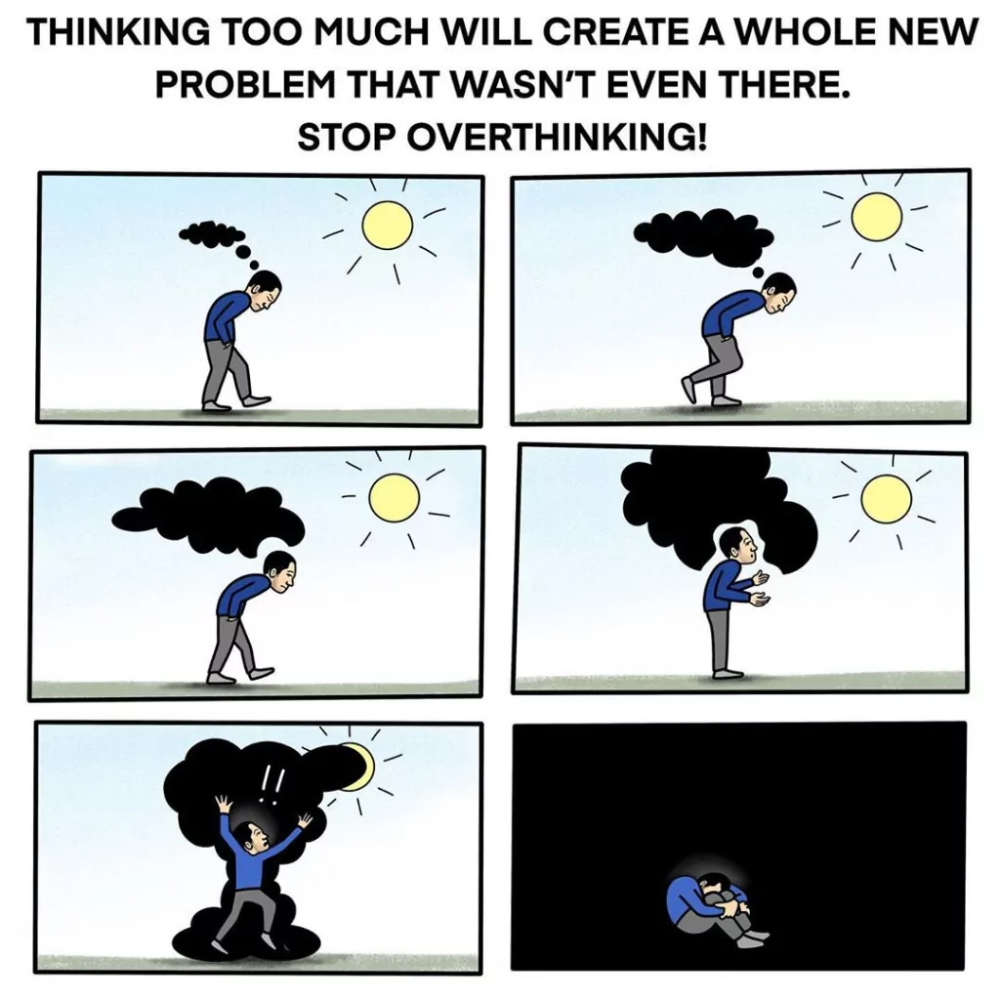
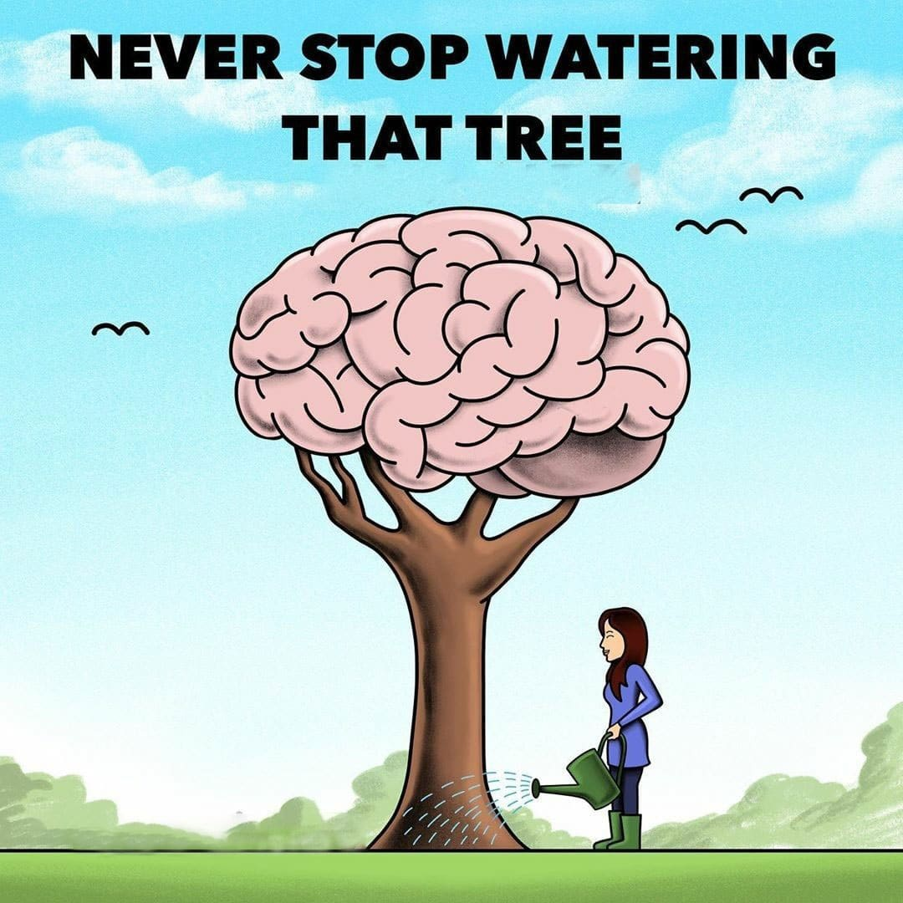
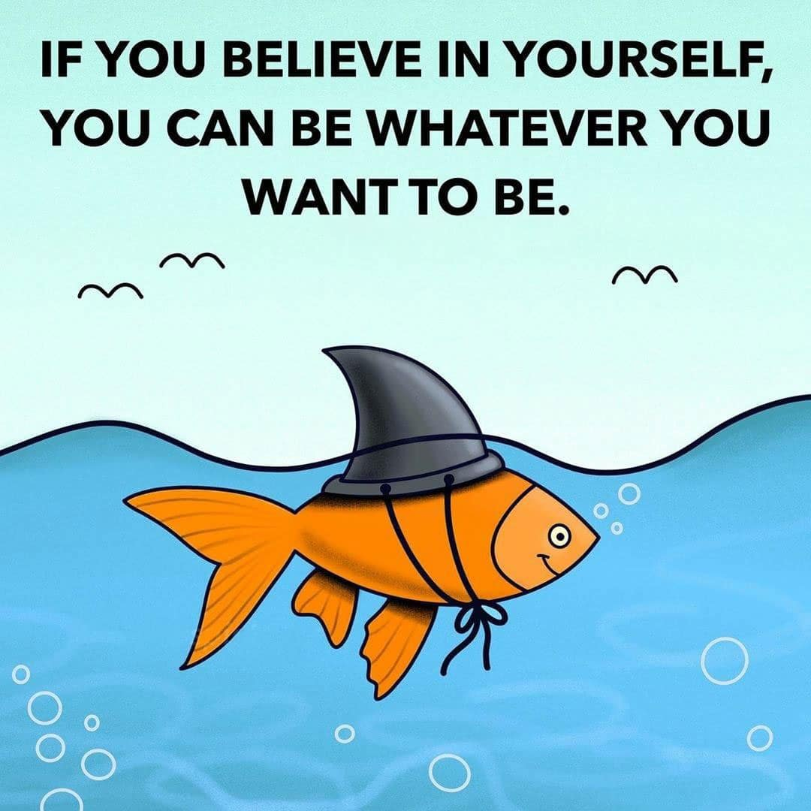

A list of Study Motivation quotes that will help you to stay motivated and Productive.
  If you are a student then it is very important and essential for you to stay motivated to achieve your goals. Often times students don’t feel like studying and think they have lost their goals in life. To do good and achieve something in life and grow in each phase of life students have to keep themselves inspired and motivated. You can keep yourself motivated by reading good study motivation quotes. Do you know what makes one successful? do you? According to us, there are Three things that make you successful.
If you want to be good at studies then you need to improve yourself and you should never stop developing yourself. Develop a passion for improving yourself, develop a passion for learning. Improving yourself begins right where you are, yes improving yourself starts with education. You don’t go school to fail, you go there to learn, so instead of thinking about anything else learn how to be the best at whatever you want to do in your life. Successful people don’t get there where they are today by following their friends and pleasing them, instead they lead, they lead and committed themselves to self-development , they exercise their mind, they learned, they studied, they passed their exams. If you want to become great at studies then you need to work on yourself. Nobody else will do it for you, only you can do it for yourself, only you can put in the work. If you are not prepared , if you do not work, you will loose, you will never win, you will always remain behind, and you will never be great, so to be successful at anything you have to get to know yourself, you have to know who you are, you have to know what your strengths are, you have to know what your learning styles are, where you study best.
Learning about yourself will build your confidence, it will change your behavior, then studies will be easier for you, it will get you places where you have never gone before. Life is not always about where you end up, it’s about the journey, it’s about the attitude, it’s about the determination, and it’s about never giving up.